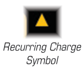
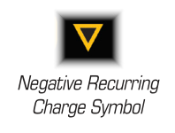

CHARGES (, , , )
Charges are two-side punchboard components that track certain limited resources. Some ship and upgrade cards have charges to denote their use.
All charges obey the following rules:
-
When an effect instructs a ship to recover a charge, an inactive charge on that ship (ship or upgrade card) is flipped to its active side. A card cannot recover a charge if all of its charges are on their active side.
-
When an effect instructs a ship to lose a charge, a charge assigned to the relevant card is flipped to the inactive side.
-
When a ship spends a charge, that charge is lost. A ship cannot spend a charge for an effect if all of its charges that are available for that effect are already inactive.
-
Each card with a charge limit (the number) starts the game with a number of charges equal to the charge limit. Each charge starts on its active side.
-
Charges associated with charge limits that have the recurring charge symbol are called recurring charges. Alternatively, charges associated with charge limits that do not have the recurring charge symbol are called non-recurring charges. Charges that are instead lost over time are called negative recurring charges.
Charge Types
There are four types of charges:
-
Standard charges (), which represent limited resources like munitions and a pilot's stamina. These have a golden number.
-
Force charges (), which represent the ebbing and flowing power of the Force: These have a purple number.
-
Shields (), which represent a ship's defensive shielding. These have a blue number.
-
Energy (), which represents a huge ship's draw of power from its engines (see Appendix: Huge Ships). These have a magenta number.
Recurring Charges

Some charge limits, shield capacities, and all Force capacities have a recurring charge symbol. During the End Phase, each card with a recurring charge symbol recovers one charge per recurring charge symbol.
Negative Recurring Charges

Some charge limits have a negative recurring charge symbol. During the End Phase, each card with a negative recurring charge symbol loses one charge per negative recurring charge symbol.
Standard Charge ()
Standard charges () can represent anything from limited munitions to exhaustible abilities that can only be performed infrequently.
-
Ship charges are charges on ship cards and upgrade charges are charges on upgrade cards.
-
If an upgrade card has a charge limit, the are placed above that upgrade card (not the ship card it is attached to).
- If an upgrade card instructs the ship to spend , those are spent from that upgrade card.
Force Charge ()
Force charges () represent how some pilots or crew members can exert their influence over the Force.
While it performs an attack, a ship can spend any number of during the Attack Dice step to change that number of its results to results. While it defends, a ship can spend any number of during the Defense Dice step to change that number of its results to results.
-
If an upgrade card has a Force capacity, this increases the Force capacity of the ship. The are placed above the ship card it is attached to (not the upgrade card).
-
A ship card that does not have a Force capacity on its ship card has a Force capacity of “0,” but that capacity can be increased by upgrade cards that have a Force capacity.
-
If a ship has multiple sources of recurring , the recurring charge symbols do not stack. During the End Phase, each ship with a Force capacity recovers a number of equal the highest number of recurring symbols among the cards that grant it a Force capacity. For example, if a ship with a Force capacity of "0" has two cards that each grant it a Force capacity of "+1" and have one recurring symbol each, that ship has a Force capacity of "2," but recovers only one during the End Phase.
-
If an upgrade card instructs the ship to spend , those are spent from the ship card.
-
Shield ()
Shields () represent defensive energy barriers. A ship is shielded while it has at least one active shield.
While a ship defends, shields provide it protection against damage. See Damage. Additionally:
-
If an upgrade card has a shield capacity, this increases the shield capacity of the ship. The are placed above the ship card it is attached to (not the upgrade card).
-
A ship card that does not have a shield capacity on its ship card has a shield capacity of “0,” but that capacity can be increased by upgrade cards that have a shield capacity.
-
During the End Phase, each ship with a shield capacity recovers a number of equal the number of recurring symbols on its ship card (only huge ships have recurring symbols, see Appendix: Huge Ships).
-
If an upgrade card instructs the ship to spend , those are spent from the ship card.
-
Energy ()
Energy () are charges used only by huge ships (see Appendix: Huge Ships).